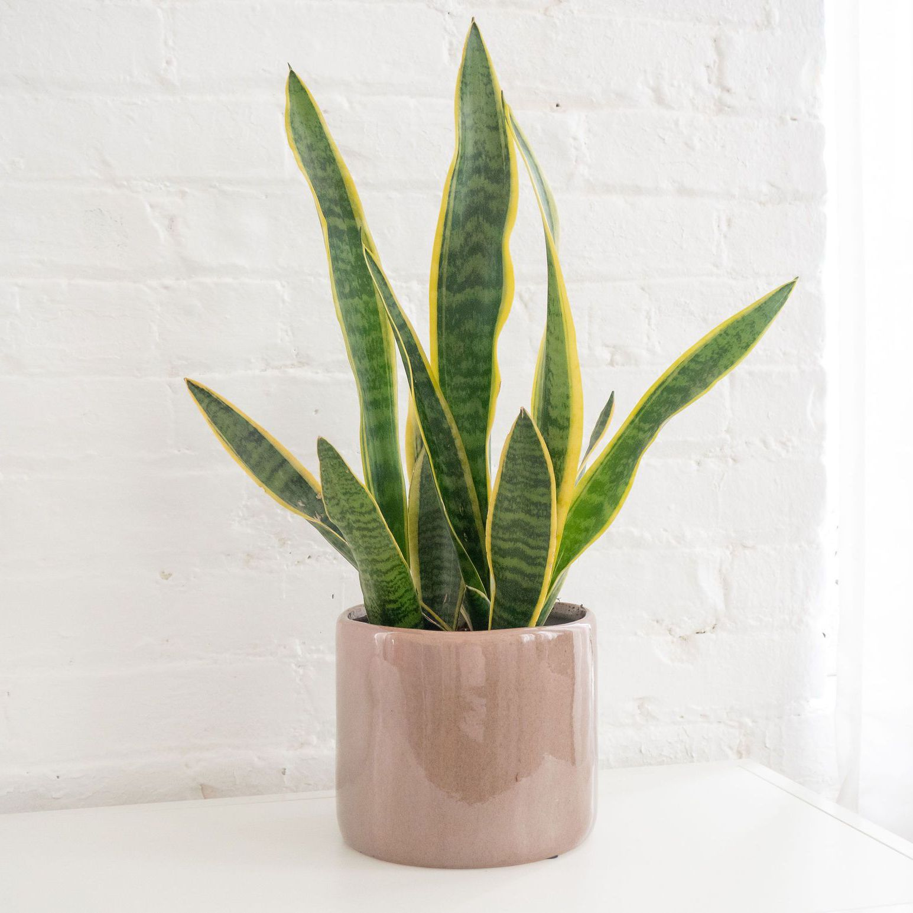

Tulasi(Ocimum Tenuiflorum)
Thulsi ia an aromatic medicinal plant is often taken in combination with other herbs. The fragrant leaves and flowers, in the form of tincture, tea or decoction are considered to be stomachic and expectorant, used in treating coughs, bronchitis, skin diseases, and diarrhea. These preparations are considered to be prophylactic against epidemics including cholera, influenza and malaria.
Amica(Eria Amica)
Agave amica is a herbaceous perennial plant growing from an underground bulb. It produces a rosette of 6 - 10 leaves, each around 30 - 60cm long and 10 - 15mm wide and a flowering stem that is up to 100cm tall
Aleovera(Aloe Barbadensis Miller)
Aloe is used topically (applied to the skin) and orally. Topical use of aloe is promoted for acne, lichen planus (a very itchy rash on the skin or in the mouth), oral submucous fibrosis, burning mouth syndrome, burns, and radiation-induced skin toxicity.
Money plant(Epipremaum Aurem)
Money plant is popular and known for bringing positivity, prosperity and good luck to the area. As per Vastu as well as Feng Shui, money plants have a strong effect on the financial well being
Snake plant(Dracaena Trifasciata)
Snake plant medicinal benefits include removing indoor air pollutants (such as formaldehyde and benzene) and helping to filter out impurities such as xylene, trichloroethylene, toluene, and ammonia.

Cotton lavender(Santolina Chamaecyparissus)
avender cotton is usedfor digestion problems, premenstrual syndrome (PMS), worms, yellowed skin (jaundice), swelling, and muscle spasms. Lavender cotton is sometimes applied directly to the skin to repel insects.
Burdock plant(Arctium)
Burdok plant is a genius of biennial plants commonly known as burdock, family Asteraceae. Native to Europe and Asia, several species have been widely introduced worldwide. Burdock's clinging properties, in addition to providing an excellent mechanism for seed dispersal, led to the invention of the hook and loop fastener.
Lotus(Nelumbo)
People use lotus for bleeding, cough, fever, liver and stomach problems
Dahlia(Dahlia Pinnata)
in landscaping, in floristry as a cut flower, for the pharmaceutical industry, cosmetic, food and as raw material for the extraction of dyes.
Rose(Rosa)
Rose are best known as ornamental plants grown for their flowers in the garden and sometimes indoors.